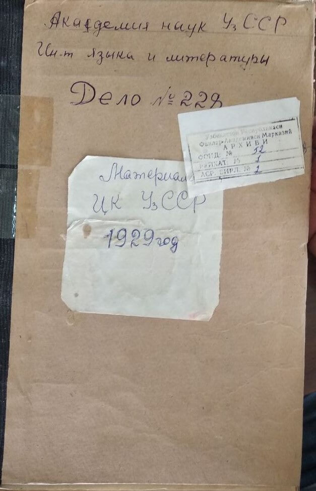
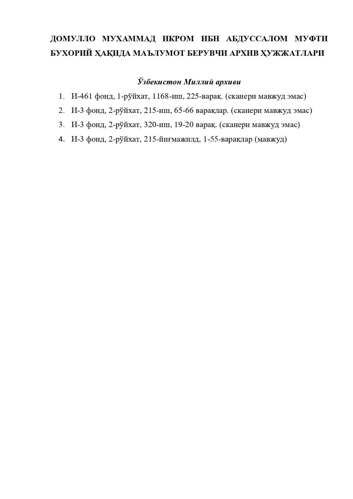

Samarqand shahrida yangi usul maktabini ochish to'g'risidagi ariza
Mahmudxo'ja Behbudiy boshchiligidagi ziyolilarning Turkiston general-gubernatoriga yangi usul maktabi dasturi va darsliklari haqidagi rasmiy arizasi.

Turkiston Muxtoriyati ta'sis s'ezdi hisoboti va qarorlari
Qo'qon shahrida bo'lib o'tgan IV Favqulodda umumturkiston o'lka musulmonlar s'ezdida qabul qilingan davlat deklaratsiyasi matni.

Munavvarqori Abdurashidxonovning «Dorulmuallimin» nizomi
Toshkentda ochilgan ilk o'qituvchilar tayyorlash instituti («Dorulmuallimin»)ning ish rejasi, dars jadvallari va o'quv dasturi.

Abdurauf Fitrat: «Munozara» asari qo'lyozma nusxasi
Buxoro madrasasi mudarrisi bilan ovrupolik sayyoh o'rtasidagi ilmiy bahs haqidagi mashhur falsafiy asarning toshbosma dastlabki nusxasi.

Turkiston xalq dorilfununi ochilishi haqidagi rasmiy xabarnoma
Milliy ziyolilar tashabbusi bilan tashkil etilgan oliy ta'lim muassasasining tuzilmasi va jadid professor-o'qituvchilari ro'yxati.
I Butunittifoq turkologiya qurultoyi stenogrammasi
Boku shahrida o'tkazilgan, lotin yozuviga o'tish masalasi ko'rilgan qurultoyda O'zbekiston delegatsiyasining ma'ruzalari va bahslari.